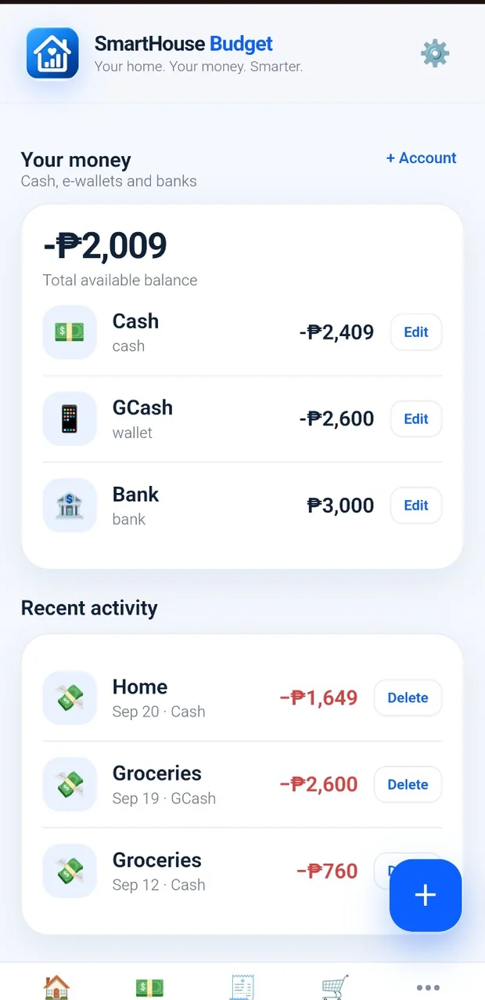
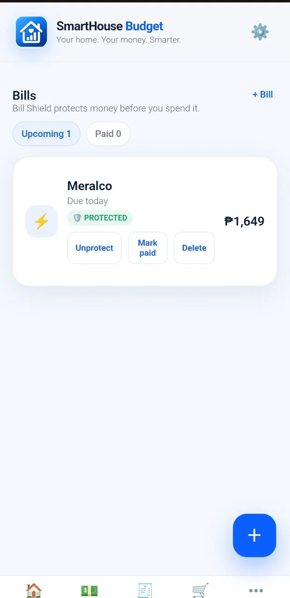
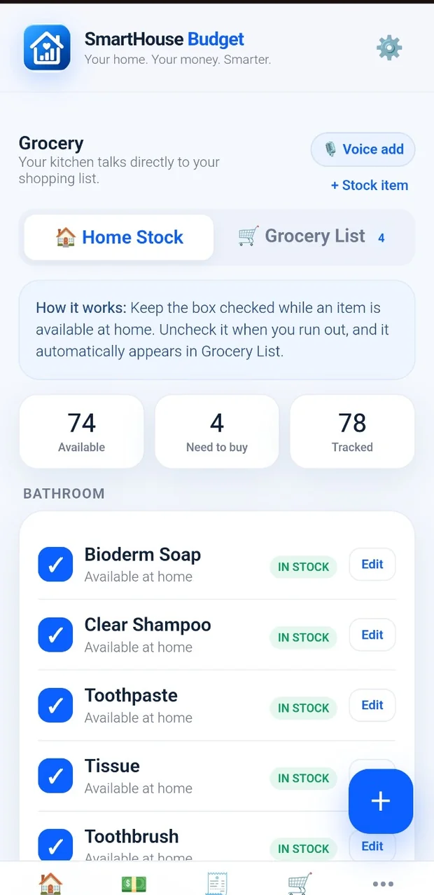
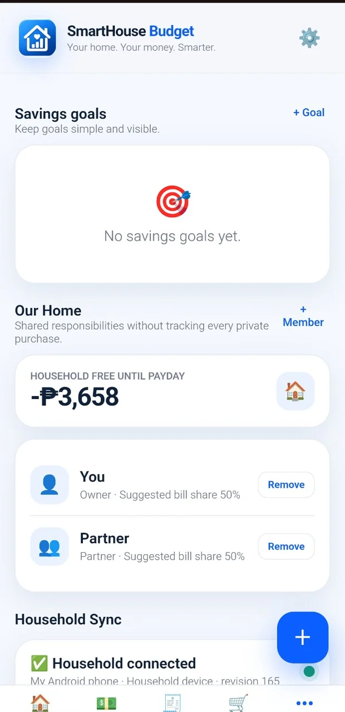

SmartHouse Budget
A mobile-first budgeting system focused on knowing what is truly available before payday.

Why this exists.
Many household budgets track balances without protecting upcoming bills or connecting spending to real grocery needs. SmartHouse explores a more practical view of cash, protected bills and household inventory.
Key modules
- Payday planning and bill protection concepts
- Expense, income and account tracking
- Home stock and grocery list workflows
- Household view and savings goals
Built with direction and review.
My role: Product planning, requirements, interface review, functional testing, and AI-assisted software development.
Where AI helped: Feature decomposition and assisted implementation reviews for payday planning, bills, transactions, and grocery modules.
The screenshots show sample accounts, transactions, bills, grocery stock and household UI. Live cloud and multi-device behavior must be tested separately from these visuals.
Current limitation: Sample financial figures are not real personal or family data. A visual UI cannot by itself prove encryption or synchronization.
Inside the project.





Screenshots come from the uploaded development/demo materials. Click any image to expand.
Work that can be inspected.
Explore the demonstration where available, or return to the full portfolio to see more work.